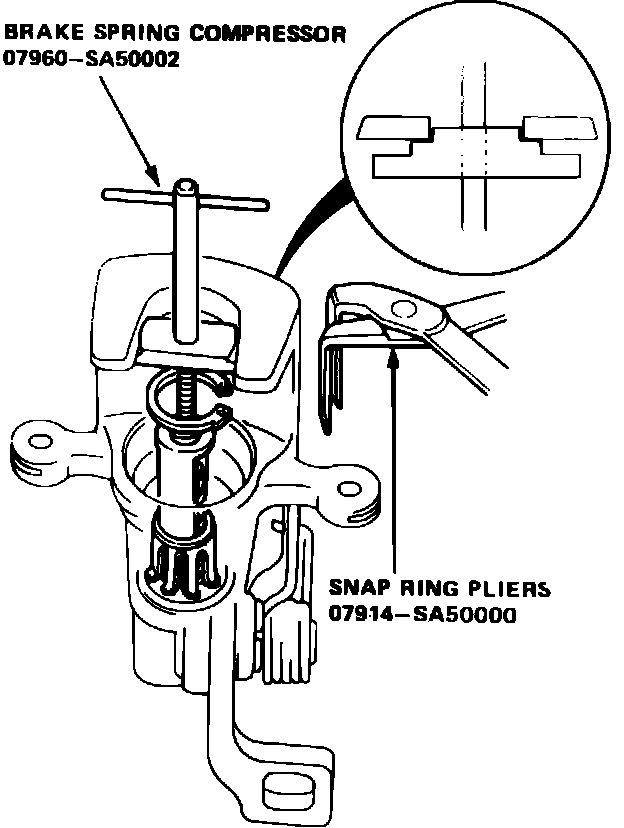

Rear
Fig. 9 Exploded view of rear disc brake assembly. Legend:

Fig. 10 Brake spring removal. Integra:

REAR
1. Raise and support rear of vehicle and remove wheels.
2. Remove caliper shield, then disconnect parking brake cable from caliper.
3. Unfasten caliper and position aside, leaving brake line attached.
4. Remove brake pads and, if equipped, the shims, Fig. 9.
5. Clean caliper and inspect for excessive wear or damage.
6. Install pad retainers, then the pads and shims, if equipped, Fig. 9 and 10.
7. Rotate caliper piston into position in cylinder, then turn back piston to align cutout in piston with projection on inner pad.
8. Install caliper, torquing attaching bolts to 17 ft. lbs. on Integra models, or 20 ft. lbs. on Legend models. Ensure piston boot is not twisted when installing caliper.
9. Connect parking brake cable to caliper.
10. Install caliper shield, torquing attaching bolts to 7 ft. lbs.